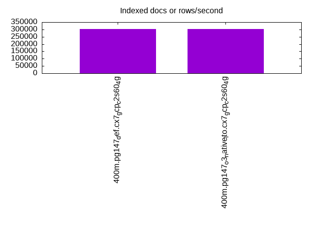
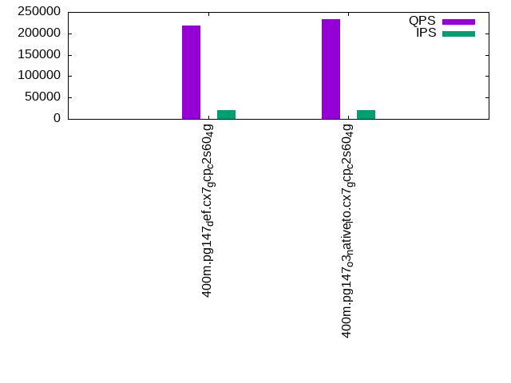

This is a report for the insert benchmark with 400M docs and 20 client(s). It is generated by scripts (bash, awk, sed) and Tufte might not be impressed. An overview of the insert benchmark is here and a short update is here. Below, by DBMS, I mean DBMS+version.config. An example is my8020.c10b40 where my means MySQL, 8020 is version 8.0.20 and c10b40 is the name for the configuration file.
The test server is a c2-standard-60 from GCP with 30 cores, hyperthreading disabled, 240G RAM and 3T from XFS and SW RAID 0 striped over 8 local NVMe drives. The benchmark was run with 20 clients and there were 1 or 2 connections per client (1 for queries, 1 for inserts). The benchmark loads 400M rows without secondary indexes, creates secondary indexes, loads another 400M rows then does 3 read+write tests for one hour each that do queries as fast as possible with 100, 500 and then 1000 writes/second/client concurrent with the queries. Each read-write test runs for 1800 seconds. The test was configured to use one table. The database fits in the OS page cache but not the DBMS buffer pool. Clients and the DBMS share one server. The per-database configs are in the per-database subdirectories here.
The tested DBMS are:
The numbers are inserts/s for l.i0 and l.i1, indexed docs (or rows) /s for l.x and queries/s for q*.2. The values are the average rate over the entire test for inserts (IPS) and queries (QPS). The range of values for IPS and QPS is split into 3 parts: bottom 25%, middle 50%, top 25%. Values in the bottom 25% have a red background, values in the top 25% have a green background and values in the middle have no color. A gray background is used for values that can be ignored because the DBMS did not sustain the target insert rate. Red backgrounds are not used when the minimum value is within 80% of the max value.
| dbms | l.i0 | l.x | l.i1 | q100.1 | q500.1 | q1000.1 |
|---|---|---|---|---|---|---|
| 400m.pg147_def.cx7_gcp_c2s60_4g | 1063830 | 302877 | 33200 | 189076 | 190828 | 217548 |
| 400m.pg147_o3_native_lto.cx7_gcp_c2s60_4g | 1108033 | 302648 | 33428 | 199166 | 200818 | 232711 |
This lists the average rate of inserts/s for the tests that do inserts concurrent with queries. For such tests the query rate is listed in the table above. The read+write tests are setup so that the insert rate should match the target rate every second. Cells that are not at least 95% of the target have a red background to indicate a failure to satisfy the target.
| dbms | q100.1 | q500.1 | q1000.1 |
|---|---|---|---|
| pg147_def.cx7_gcp_c2s60_4g | 1976 | 9885 | 19661 |
| pg147_o3_native_lto.cx7_gcp_c2s60_4g | 1976 | 9885 | 19694 |
| target | 2000 | 10000 | 20000 |
l.i0: load without secondary indexes. Graphs for performance per 1-second interval are here.
Average throughput:
Insert response time histogram: each cell has the percentage of responses that take <= the time in the header and max is the max response time in seconds. For the max column values in the top 25% of the range have a red background and in the bottom 25% of the range have a green background. The red background is not used when the min value is within 80% of the max value.
| dbms | 256us | 1ms | 4ms | 16ms | 64ms | 256ms | 1s | 4s | 16s | gt | max |
|---|---|---|---|---|---|---|---|---|---|---|---|
| pg147_def.cx7_gcp_c2s60_4g | 16.575 | 80.380 | 2.986 | 0.017 | 0.021 | 0.021 | 0.834 | ||||
| pg147_o3_native_lto.cx7_gcp_c2s60_4g | 26.313 | 70.766 | 2.854 | 0.024 | 0.024 | 0.018 | 0.756 |
Performance metrics for the DBMS listed above. Some are normalized by throughput, others are not. Legend for results is here.
ips qps rps rmbps wps wmbps rpq rkbpq wpi wkbpi csps cpups cspq cpupq dbgb1 dbgb2 rss maxop p50 p99 tag 1063830 0 130 3.6 2086.8 448.8 0.000 0.003 0.002 0.432 298079 57.4 0.280 16 43.0 112.7 NA 0.834 59434 9289 400m.pg147_def.cx7_gcp_c2s60_4g 1108033 0 206 4.4 2265.0 469.1 0.000 0.004 0.002 0.433 313624 57.1 0.283 15 43.0 112.4 NA 0.756 62041 8990 400m.pg147_o3_native_lto.cx7_gcp_c2s60_4g
l.x: create secondary indexes.
Average throughput:
Performance metrics for the DBMS listed above. Some are normalized by throughput, others are not. Legend for results is here.
ips qps rps rmbps wps wmbps rpq rkbpq wpi wkbpi csps cpups cspq cpupq dbgb1 dbgb2 rss maxop p50 p99 tag 302877 0 1940 41.3 456.8 110.4 0.006 0.140 0.002 0.373 1762 3.3 0.006 3 78.3 161.7 0.0 0.002 NA NA 400m.pg147_def.cx7_gcp_c2s60_4g 302648 0 2093 41.7 478.4 110.0 0.007 0.141 0.002 0.372 1833 3.4 0.006 3 78.3 162.6 0.0 0.002 NA NA 400m.pg147_o3_native_lto.cx7_gcp_c2s60_4g
l.i1: continue load after secondary indexes created. Graphs for performance per 1-second interval are here.
Average throughput:
Insert response time histogram: each cell has the percentage of responses that take <= the time in the header and max is the max response time in seconds. For the max column values in the top 25% of the range have a red background and in the bottom 25% of the range have a green background. The red background is not used when the min value is within 80% of the max value.
| dbms | 256us | 1ms | 4ms | 16ms | 64ms | 256ms | 1s | 4s | 16s | gt | max |
|---|---|---|---|---|---|---|---|---|---|---|---|
| pg147_def.cx7_gcp_c2s60_4g | 0.046 | 5.741 | 88.746 | 5.464 | 0.002 | 0.623 | |||||
| pg147_o3_native_lto.cx7_gcp_c2s60_4g | 0.056 | 5.848 | 88.743 | 5.351 | 0.002 | 0.430 |
Performance metrics for the DBMS listed above. Some are normalized by throughput, others are not. Legend for results is here.
ips qps rps rmbps wps wmbps rpq rkbpq wpi wkbpi csps cpups cspq cpupq dbgb1 dbgb2 rss maxop p50 p99 tag 33200 0 71917 664.8 60456.4 579.9 2.166 20.504 1.821 17.884 128363 12.8 3.866 116 170.2 252.8 0.0 0.623 1698 700 400m.pg147_def.cx7_gcp_c2s60_4g 33428 0 71455 661.7 60900.2 583.5 2.138 20.270 1.822 17.874 129296 12.5 3.868 112 170.2 251.4 0.0 0.430 1698 749 400m.pg147_o3_native_lto.cx7_gcp_c2s60_4g
q100.1: range queries with 100 insert/s per client. Graphs for performance per 1-second interval are here.
Average throughput:
Query response time histogram: each cell has the percentage of responses that take <= the time in the header and max is the max response time in seconds. For max values in the top 25% of the range have a red background and in the bottom 25% of the range have a green background. The red background is not used when the min value is within 80% of the max value.
| dbms | 256us | 1ms | 4ms | 16ms | 64ms | 256ms | 1s | 4s | 16s | gt | max |
|---|---|---|---|---|---|---|---|---|---|---|---|
| pg147_def.cx7_gcp_c2s60_4g | 99.905 | 0.092 | 0.002 | 0.001 | nonzero | 0.037 | |||||
| pg147_o3_native_lto.cx7_gcp_c2s60_4g | 99.926 | 0.071 | 0.002 | 0.001 | nonzero | 0.029 |
Insert response time histogram: each cell has the percentage of responses that take <= the time in the header and max is the max response time in seconds. For max values in the top 25% of the range have a red background and in the bottom 25% of the range have a green background. The red background is not used when the min value is within 80% of the max value.
| dbms | 256us | 1ms | 4ms | 16ms | 64ms | 256ms | 1s | 4s | 16s | gt | max |
|---|---|---|---|---|---|---|---|---|---|---|---|
| pg147_def.cx7_gcp_c2s60_4g | 0.544 | 99.449 | 0.007 | 0.375 | |||||||
| pg147_o3_native_lto.cx7_gcp_c2s60_4g | 0.696 | 99.207 | 0.097 | 0.252 |
Performance metrics for the DBMS listed above. Some are normalized by throughput, others are not. Legend for results is here.
ips qps rps rmbps wps wmbps rpq rkbpq wpi wkbpi csps cpups cspq cpupq dbgb1 dbgb2 rss maxop p50 p99 tag 1976 189076 3847 39.3 4134.2 51.8 0.020 0.213 2.092 26.840 677004 63.2 3.581 100 171.1 232.6 0.0 0.037 9461 9050 400m.pg147_def.cx7_gcp_c2s60_4g 1976 199166 3752 38.3 4123.0 50.7 0.019 0.197 2.087 26.268 711014 62.6 3.570 94 171.1 232.3 0.0 0.029 9925 9541 400m.pg147_o3_native_lto.cx7_gcp_c2s60_4g
q500.1: range queries with 500 insert/s per client. Graphs for performance per 1-second interval are here.
Average throughput:
Query response time histogram: each cell has the percentage of responses that take <= the time in the header and max is the max response time in seconds. For max values in the top 25% of the range have a red background and in the bottom 25% of the range have a green background. The red background is not used when the min value is within 80% of the max value.
| dbms | 256us | 1ms | 4ms | 16ms | 64ms | 256ms | 1s | 4s | 16s | gt | max |
|---|---|---|---|---|---|---|---|---|---|---|---|
| pg147_def.cx7_gcp_c2s60_4g | 99.643 | 0.345 | 0.012 | 0.001 | nonzero | 0.029 | |||||
| pg147_o3_native_lto.cx7_gcp_c2s60_4g | 99.703 | 0.285 | 0.011 | 0.001 | nonzero | 0.028 |
Insert response time histogram: each cell has the percentage of responses that take <= the time in the header and max is the max response time in seconds. For max values in the top 25% of the range have a red background and in the bottom 25% of the range have a green background. The red background is not used when the min value is within 80% of the max value.
| dbms | 256us | 1ms | 4ms | 16ms | 64ms | 256ms | 1s | 4s | 16s | gt | max |
|---|---|---|---|---|---|---|---|---|---|---|---|
| pg147_def.cx7_gcp_c2s60_4g | 0.584 | 99.401 | 0.015 | 0.108 | |||||||
| pg147_o3_native_lto.cx7_gcp_c2s60_4g | 0.838 | 99.131 | 0.029 | 0.002 | 0.272 |
Performance metrics for the DBMS listed above. Some are normalized by throughput, others are not. Legend for results is here.
ips qps rps rmbps wps wmbps rpq rkbpq wpi wkbpi csps cpups cspq cpupq dbgb1 dbgb2 rss maxop p50 p99 tag 9885 190828 17705 184.2 19533.1 208.6 0.093 0.988 1.976 21.613 662907 65.7 3.474 103 176.0 232.1 0.0 0.029 9477 8902 400m.pg147_def.cx7_gcp_c2s60_4g 9885 200818 17715 184.1 19528.4 208.1 0.088 0.939 1.976 21.558 695673 65.4 3.464 98 176.0 229.6 0.0 0.028 9989 9334 400m.pg147_o3_native_lto.cx7_gcp_c2s60_4g
q1000.1: range queries with 1000 insert/s per client. Graphs for performance per 1-second interval are here.
Average throughput:
Query response time histogram: each cell has the percentage of responses that take <= the time in the header and max is the max response time in seconds. For max values in the top 25% of the range have a red background and in the bottom 25% of the range have a green background. The red background is not used when the min value is within 80% of the max value.
| dbms | 256us | 1ms | 4ms | 16ms | 64ms | 256ms | 1s | 4s | 16s | gt | max |
|---|---|---|---|---|---|---|---|---|---|---|---|
| pg147_def.cx7_gcp_c2s60_4g | 99.432 | 0.547 | 0.020 | 0.001 | nonzero | 0.035 | |||||
| pg147_o3_native_lto.cx7_gcp_c2s60_4g | 99.512 | 0.469 | 0.018 | 0.001 | nonzero | nonzero | 0.071 |
Insert response time histogram: each cell has the percentage of responses that take <= the time in the header and max is the max response time in seconds. For max values in the top 25% of the range have a red background and in the bottom 25% of the range have a green background. The red background is not used when the min value is within 80% of the max value.
| dbms | 256us | 1ms | 4ms | 16ms | 64ms | 256ms | 1s | 4s | 16s | gt | max |
|---|---|---|---|---|---|---|---|---|---|---|---|
| pg147_def.cx7_gcp_c2s60_4g | 1.637 | 93.228 | 5.131 | 0.003 | 0.589 | ||||||
| pg147_o3_native_lto.cx7_gcp_c2s60_4g | 1.926 | 92.982 | 5.093 | nonzero | 0.262 |
Performance metrics for the DBMS listed above. Some are normalized by throughput, others are not. Legend for results is here.
ips qps rps rmbps wps wmbps rpq rkbpq wpi wkbpi csps cpups cspq cpupq dbgb1 dbgb2 rss maxop p50 p99 tag 19661 217548 37955 384.4 37263.8 391.6 0.174 1.809 1.895 20.397 676672 69.7 3.110 96 189.4 261.2 0.0 0.035 10804 8186 400m.pg147_def.cx7_gcp_c2s60_4g 19694 232711 38338 387.6 37374.9 392.0 0.165 1.705 1.898 20.380 718097 69.7 3.086 90 189.4 261.3 0.0 0.071 11427 8420 400m.pg147_o3_native_lto.cx7_gcp_c2s60_4g
l.i0: load without secondary indexes
Performance metrics for all DBMS, not just the ones listed above. Some are normalized by throughput, others are not. Legend for results is here.
ips qps rps rmbps wps wmbps rpq rkbpq wpi wkbpi csps cpups cspq cpupq dbgb1 dbgb2 rss maxop p50 p99 tag 1063830 0 130 3.6 2086.8 448.8 0.000 0.003 0.002 0.432 298079 57.4 0.280 16 43.0 112.7 NA 0.834 59434 9289 400m.pg147_def.cx7_gcp_c2s60_4g 1108033 0 206 4.4 2265.0 469.1 0.000 0.004 0.002 0.433 313624 57.1 0.283 15 43.0 112.4 NA 0.756 62041 8990 400m.pg147_o3_native_lto.cx7_gcp_c2s60_4g
l.x: create secondary indexes
Performance metrics for all DBMS, not just the ones listed above. Some are normalized by throughput, others are not. Legend for results is here.
ips qps rps rmbps wps wmbps rpq rkbpq wpi wkbpi csps cpups cspq cpupq dbgb1 dbgb2 rss maxop p50 p99 tag 302877 0 1940 41.3 456.8 110.4 0.006 0.140 0.002 0.373 1762 3.3 0.006 3 78.3 161.7 0.0 0.002 NA NA 400m.pg147_def.cx7_gcp_c2s60_4g 302648 0 2093 41.7 478.4 110.0 0.007 0.141 0.002 0.372 1833 3.4 0.006 3 78.3 162.6 0.0 0.002 NA NA 400m.pg147_o3_native_lto.cx7_gcp_c2s60_4g
l.i1: continue load after secondary indexes created
Performance metrics for all DBMS, not just the ones listed above. Some are normalized by throughput, others are not. Legend for results is here.
ips qps rps rmbps wps wmbps rpq rkbpq wpi wkbpi csps cpups cspq cpupq dbgb1 dbgb2 rss maxop p50 p99 tag 33200 0 71917 664.8 60456.4 579.9 2.166 20.504 1.821 17.884 128363 12.8 3.866 116 170.2 252.8 0.0 0.623 1698 700 400m.pg147_def.cx7_gcp_c2s60_4g 33428 0 71455 661.7 60900.2 583.5 2.138 20.270 1.822 17.874 129296 12.5 3.868 112 170.2 251.4 0.0 0.430 1698 749 400m.pg147_o3_native_lto.cx7_gcp_c2s60_4g
q100.1: range queries with 100 insert/s per client
Performance metrics for all DBMS, not just the ones listed above. Some are normalized by throughput, others are not. Legend for results is here.
ips qps rps rmbps wps wmbps rpq rkbpq wpi wkbpi csps cpups cspq cpupq dbgb1 dbgb2 rss maxop p50 p99 tag 1976 189076 3847 39.3 4134.2 51.8 0.020 0.213 2.092 26.840 677004 63.2 3.581 100 171.1 232.6 0.0 0.037 9461 9050 400m.pg147_def.cx7_gcp_c2s60_4g 1976 199166 3752 38.3 4123.0 50.7 0.019 0.197 2.087 26.268 711014 62.6 3.570 94 171.1 232.3 0.0 0.029 9925 9541 400m.pg147_o3_native_lto.cx7_gcp_c2s60_4g
q500.1: range queries with 500 insert/s per client
Performance metrics for all DBMS, not just the ones listed above. Some are normalized by throughput, others are not. Legend for results is here.
ips qps rps rmbps wps wmbps rpq rkbpq wpi wkbpi csps cpups cspq cpupq dbgb1 dbgb2 rss maxop p50 p99 tag 9885 190828 17705 184.2 19533.1 208.6 0.093 0.988 1.976 21.613 662907 65.7 3.474 103 176.0 232.1 0.0 0.029 9477 8902 400m.pg147_def.cx7_gcp_c2s60_4g 9885 200818 17715 184.1 19528.4 208.1 0.088 0.939 1.976 21.558 695673 65.4 3.464 98 176.0 229.6 0.0 0.028 9989 9334 400m.pg147_o3_native_lto.cx7_gcp_c2s60_4g
q1000.1: range queries with 1000 insert/s per client
Performance metrics for all DBMS, not just the ones listed above. Some are normalized by throughput, others are not. Legend for results is here.
ips qps rps rmbps wps wmbps rpq rkbpq wpi wkbpi csps cpups cspq cpupq dbgb1 dbgb2 rss maxop p50 p99 tag 19661 217548 37955 384.4 37263.8 391.6 0.174 1.809 1.895 20.397 676672 69.7 3.110 96 189.4 261.2 0.0 0.035 10804 8186 400m.pg147_def.cx7_gcp_c2s60_4g 19694 232711 38338 387.6 37374.9 392.0 0.165 1.705 1.898 20.380 718097 69.7 3.086 90 189.4 261.3 0.0 0.071 11427 8420 400m.pg147_o3_native_lto.cx7_gcp_c2s60_4g
Insert response time histogram
256us 1ms 4ms 16ms 64ms 256ms 1s 4s 16s gt max tag 0.000 16.575 80.380 2.986 0.017 0.021 0.021 0.000 0.000 0.000 0.834 pg147_def.cx7_gcp_c2s60_4g 0.000 26.313 70.766 2.854 0.024 0.024 0.018 0.000 0.000 0.000 0.756 pg147_o3_native_lto.cx7_gcp_c2s60_4g
TODO - determine whether there is data for create index response time
Insert response time histogram
256us 1ms 4ms 16ms 64ms 256ms 1s 4s 16s gt max tag 0.000 0.000 0.046 5.741 88.746 5.464 0.002 0.000 0.000 0.000 0.623 pg147_def.cx7_gcp_c2s60_4g 0.000 0.000 0.056 5.848 88.743 5.351 0.002 0.000 0.000 0.000 0.430 pg147_o3_native_lto.cx7_gcp_c2s60_4g
Query response time histogram
256us 1ms 4ms 16ms 64ms 256ms 1s 4s 16s gt max tag 99.905 0.092 0.002 0.001 nonzero 0.000 0.000 0.000 0.000 0.000 0.037 pg147_def.cx7_gcp_c2s60_4g 99.926 0.071 0.002 0.001 nonzero 0.000 0.000 0.000 0.000 0.000 0.029 pg147_o3_native_lto.cx7_gcp_c2s60_4g
Insert response time histogram
256us 1ms 4ms 16ms 64ms 256ms 1s 4s 16s gt max tag 0.000 0.000 0.000 0.544 99.449 0.000 0.007 0.000 0.000 0.000 0.375 pg147_def.cx7_gcp_c2s60_4g 0.000 0.000 0.000 0.696 99.207 0.097 0.000 0.000 0.000 0.000 0.252 pg147_o3_native_lto.cx7_gcp_c2s60_4g
Query response time histogram
256us 1ms 4ms 16ms 64ms 256ms 1s 4s 16s gt max tag 99.643 0.345 0.012 0.001 nonzero 0.000 0.000 0.000 0.000 0.000 0.029 pg147_def.cx7_gcp_c2s60_4g 99.703 0.285 0.011 0.001 nonzero 0.000 0.000 0.000 0.000 0.000 0.028 pg147_o3_native_lto.cx7_gcp_c2s60_4g
Insert response time histogram
256us 1ms 4ms 16ms 64ms 256ms 1s 4s 16s gt max tag 0.000 0.000 0.000 0.584 99.401 0.015 0.000 0.000 0.000 0.000 0.108 pg147_def.cx7_gcp_c2s60_4g 0.000 0.000 0.000 0.838 99.131 0.029 0.002 0.000 0.000 0.000 0.272 pg147_o3_native_lto.cx7_gcp_c2s60_4g
Query response time histogram
256us 1ms 4ms 16ms 64ms 256ms 1s 4s 16s gt max tag 99.432 0.547 0.020 0.001 nonzero 0.000 0.000 0.000 0.000 0.000 0.035 pg147_def.cx7_gcp_c2s60_4g 99.512 0.469 0.018 0.001 nonzero nonzero 0.000 0.000 0.000 0.000 0.071 pg147_o3_native_lto.cx7_gcp_c2s60_4g
Insert response time histogram
256us 1ms 4ms 16ms 64ms 256ms 1s 4s 16s gt max tag 0.000 0.000 0.000 1.637 93.228 5.131 0.003 0.000 0.000 0.000 0.589 pg147_def.cx7_gcp_c2s60_4g 0.000 0.000 0.000 1.926 92.982 5.093 nonzero 0.000 0.000 0.000 0.262 pg147_o3_native_lto.cx7_gcp_c2s60_4g